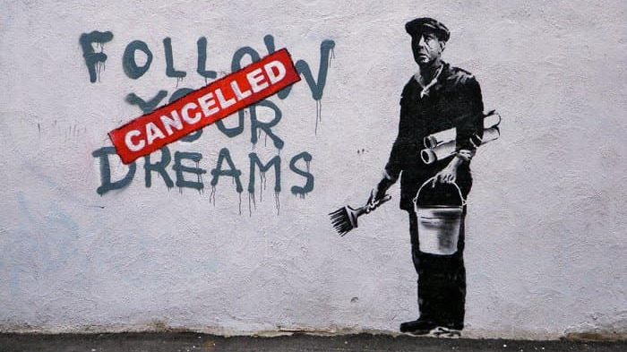

El arte callejero esta siendo un auge en la ciudad de medellín.
Existen diversas formas de expresar arte callejero. Se manifiesta con frecuencia través de la pintura o
grafiti, el teatro de la calle, el malabarismo, entre otras. Cada una de estas expresiones artísticas se rigen bajo el
concepto de buscar un estilo contemporáneo en base a las tendencias sociales. El arte callejero es una práctica vinculada a las
artes que tenga como escenario las calles de la ciudad. Muchas veces son anónimas.
 El arte se vive y se siente, y el callejero se goza.